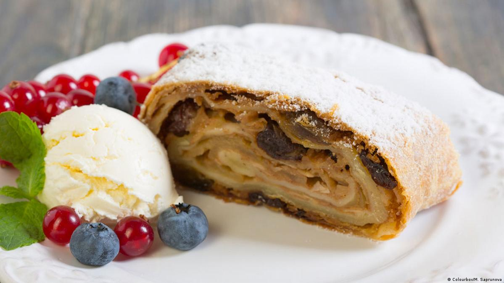
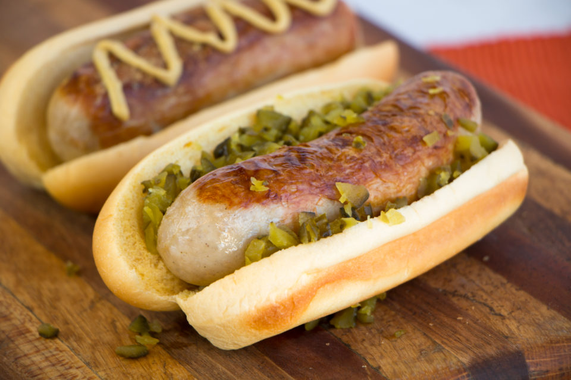
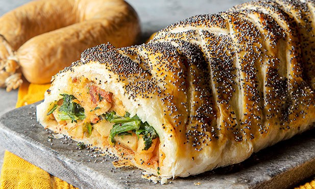
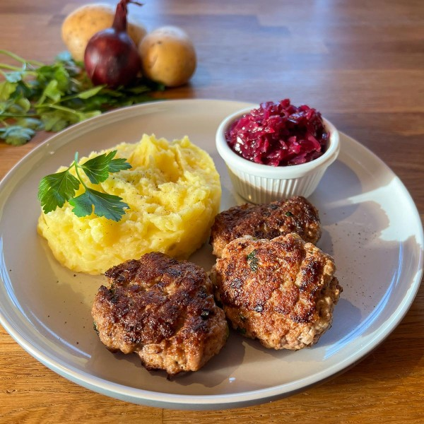
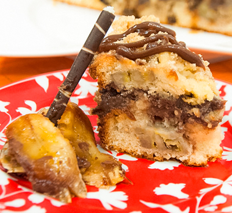

Ensopado de carne com batata, cenoura, cebola e salsicha.
APFELSTRUDEL

Descrição do prato:
Massa folhada com maçã, canela e passas.
Login
Ou cadastre-se com:
Cardápio
PRATOS SALGADOS
SCHNITZEL
Composto por uma fatia fina de carne (vitela)
Empanada e frita
Receita:
Ingredientes (4 porções):
4 bifes de lombo suíno (aprox. 150g cada)1/2 xícara de farinha de trigo1/2 xícara de farinha de rosca ou Panko2 ovos inteiros2 colheres (sopa) de água ou leiteSal e pimenta-do-reino a gostoÓleo vegetal ou banha de porco para fritarLimão-siciliano e salsinha para decorar
MODO DE PREPARO
Bater a carne: Coloque os bifes entre dois pedaços de plástico filme e bata com um martelo de carne até ficarem com cerca de 0,5 cm de espessura.
Temperar: Tempere com sal e pimenta dos dois lados.
Empanar: Passe cada bife na farinha de trigo (retire o excesso), depois no ovo batido com água, e finalmente na farinha de rosca. Dica: Não aperte muito a farinha de rosca para garantir que o empanado fique "folhado" e crocante.
Fritar: Aqueça bastante óleo (ou banha) em uma frigideira a 170°C. Frite os bifes por 2 a 4 minutos de cada lado até ficarem bem dourados.
Finalizar: Deixe secar em papel absorvente por alguns segundos.
Servir: Sirva imediatamente com fatias de limão-siciliano e salsa fresca.
EINTOPF
Ensopado de carne com batata, cenoura, cebola e salsicha.
Receita:
Ingredientes
500g de carne bovina cortada em cubos2 cenouras, cortadas em rodelas1 nabo, cortado em cubos1 batata grande, cortada em cubos1 cebola picada2 dentes de alho picados1 litro de caldo de carneSal e pimenta a gosto
MODO DE PREPARO
Aqueça o óleo em uma panela grande em fogo médio. Adicione a carne e doure de todos os lados.
Retire a carne e reserve.
Na mesma panela, adicione a cebola e o alho, refogando até ficarem transparentes.
Retorne a carne à panela, acrescente o caldo de carne, o tomilho, a folha de louro, sal e pimenta.
Deixe cozinhar em fogo baixo por 30 minutos.
Adicione as cenouras, o nabo e a batata.
Cozinhe por mais 30 minutos ou até que os legumes e a carne estejam macios.
Ajuste o tempero e sirva quente.
BRATWIST

Receita:
2,6 kg de ombro de porco (25-30% gordura).400g de carne de vitela (opcional).Sal, pimenta branca, gengibre em pó, noz-moscada.Creme de leite gelado e ovos.Tripa suína.
Modo de preparo
Moagem: Moa a carne suína e a gordura (bem geladas) em disco fino.Mistura: Processe a carne moída com temperos, creme de leite e gelo até formar uma pasta lisa (emulsão).Embutir: Coloque a massa na tripa suína e amarre a cada 10-15 cm.Cozimento: Cozinhe em água a 75°C por 20 min.Finalização: Grelhe na churrasqueira ou frite em frigideira até dourar.
STRUDEL DE ALHEIRA

Azeite a gosto1 cebola3 dentes de alho2 alheirasSal a gostoPimenta-do-reino a gosto1 maço de espinafre1 tomate4 folhas de massa filoManteiga a gosto
MODO DE PREPARO
Preparar o Recheio: Retire a pele de 1 ou 2 alheiras e desfaça o recheio com um garfo. Numa frigideira com azeite, refogue cebola e alho picados. Adicione a alheira e cozinhe até ficar homogénea.
Adicionar Ingredientes Extra (Opcional): Para contrastar, adicione grelos salteados, maçã em cubos (como Maçã Reineta) ou figos.Montar o Strudel: Estenda a massa folhada ou filo (pincelada com manteiga/azeite entre camadas se for filo). Coloque o recheio no centro, deixando margens.Fechar e Assar: Dobre a massa sobre o recheio, fechando bem as pontas. Pincele com ovo batido para dourar. Faça cortes superficiais na parte superior para sair o vapor.
Forno: Leve ao forno pré-aquecido a 180°C-200°C por cerca de 15 a 20 minutos.
KARTOFFELPUFFER
Receita:
600 g de batatas cruas.1 cebola.2 ovos.1/3 de xícara (chá) de farinha de trigo.Óleo para fritar.
MODO DE PREPARO
Lave as batatas, descasque e rale-as no ralador fino.Descasque a cebola, rale e misture com as batatas.Acrescente os ovos e a farinha e misture bem.Tempere com sal e pimenta.Em uma frigideira, coloque óleo o suficiente para cobrir as panquecas.Deixe o óleo ficar bem quente.Com uma colher, pegue uma colher da misture e coloque na frigideira.Deixe fritar até ficar dourado e vire.Coloque em papel-toalha para retirar o excesso de óleo e sirva quente.
FRIKADELLEN

Receita:
500g de carne moída (patinho ou mistura de bovina/porco).1 pão francês amanhecido (duro).Leite (o suficiente para molhar o pão).1 cebola média picadinha.1 ovo inteiro.2 colheres de chá de mostarda (opcional, mas recomendado).Salsinha fresca picada a gosto.1 colher de chá de páprica doce.Sal e pimenta-do-reino a gosto.Sal e pimenta-do-reino a gosto.
MODO DE PREPARO
Pão: Deixe o pão de molho no leite por cerca de 10-15 minutos. Esprema bem o pão para tirar todo o excesso de líquido.Mistura: Em uma tigela grande, misture a carne moída, o pão amolecido e espremido, a cebola picadinha, o ovo, a mostarda, a salsinha, a páprica, o sal e a pimenta. Use as mãos para incorporar bem os ingredientes até obter uma massa firme e homogênea.
Modelag1 cebola média picadinha.em: Com as mãos úmidas (para não grudar), molde pequenos hambúrgueres (frikadellen) com cerca de 100g cada, achatando levemente.Fritura: Aqueça uma frigideira com azeite e um pouco de manteiga. Frite em fogo médio-alto até dourar bem de ambos os lados, garantindo que estejam cozidos por dentro (cerca de 4-5 minutos de cada lado).Servir: Idealmente acompanhado de salada de batata (Kartoffelsalat) ou com mostarda e pão.
PRATOS DOCES
CUCA DE BANANA COM CHOCOLATE

Receita:
1 ovo granderaspas de 1 limão pequeno. 4 colheres de leite em pó.2 e 1/2 xícaras de farinha de trigo.1 pitada de sal.1/2 barra de chocolate meio amargo picada.1/2 xícara de açúcar.2 colheres de manteiga.240 ml de água morna.1 colher (sopa) de fermento biológico seco.4 bananas nanicas em rodelas.
APFELSTRUDEL
Massa folhada com maçã, canela e passas.
Receita:
250 gramas de farinha de trigo especial.1 ovo.125 ml de água morna.1 Colher de chá de óleo de girassol.
MODO DE PREPARO
Misturar os ovos com o óleo e a água (cuidar para ustilizar-se das medidas exatas, se o ovo for muito grande acrescente um pouquinho mais de farinha de trigo).Peneirar e acrescentar a farinha de trigo e o sal. Sovar tudo para obter uma massa homogenia e firme (quanto mais você sovar a massa, melhor ela fica – 15- 20 min é o ideal)Embrulhar num pano e deixe descansar por pelo menos 20 – 30 minutos (melhor ainda se for por três horas).
BERLINER
Receita:
1 ovo granderaspas de 1 limão pequeno. 4 colheres de leite em pó.2 e 1/2 xícaras de farinha de trigo.1 pitada de sal.1/2 barra de chocolate meio amargo picada.1/2 xícara de açúcar.2 colheres de manteiga.240 ml de água morna.1 colher (sopa) de fermento biológico seco.4 bananas nanicas em rodelas.
STOLLEN
Receita:
1 ovo granderaspas de 1 limão pequeno. 4 colheres de leite em pó.2 e 1/2 xícaras de farinha de trigo.1 pitada de sal.1/2 barra de chocolate meio amargo picada.1/2 xícara de açúcar.2 colheres de manteiga.240 ml de água morna.1 colher (sopa) de fermento biológico seco.4 bananas nanicas em rodelas.